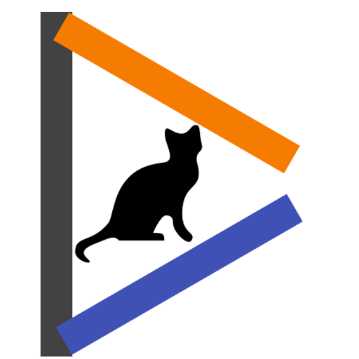

<!DOCTYPE html><html lang="ja"></html><head><meta charset="utf8"><meta name="viewport" content="width=device-width, initial-scale=1, minimum-scale=0.5, maximum-scale=1, user-scalable=yes"><meta property="og:title" content="Cutls"><meta property="og:image" content="https://cutls.com/img/thedesk.png"><meta property="og:image:width" content="512"><meta property="og:image:height" content="512"><title>Cutls</title><meta name="theme-color" content="green"><link rel="stylesheet" href="https://fonts.googleapis.com/icon?family=Material+Icons|Montserrat|Open+Sans:300"><link rel="stylesheet" href="https://use.fontawesome.com/releases/v5.3.1/css/all.css"></head><body><div id="start"><h1>Cutls</h1></div><div id="next"><br><h2 class="center">About me</h2><div class="flex-ct"><div class="card"><p class="title">Curls P</p><p class="description center">成人済み大学生</p><p class="description center">React(Native), Vue, Node.js with TypeScript</p><p class="description center">成人済み大学生</p><p class="spacer"></p><details><summary>金銭的支援</summary><a href="https://cutls.fanbox.cc" target="_blank" rel="noopener">Pixiv FANBOX</a><span>/</span><a href="https://www.patreon.com/cutls" target="_blank" rel="noopener">Patreon</a><span>/</span><a href="https://www.amazon.co.jp/registry/wishlist/2TV35ZHHJPDSB" target="_blank" rel="noopener">Amazonほしい物リスト</a><span>/</span><a class="pointer" id="copyBitcoin">Bitcoin(クリックしてアドレスをコピー)</a><p><p>Kyash</p><a href="kyash://qr/u/611373232688837504"></a></p></details></div><div class="card"><p class="title">Contact me</p><p class="semi-title"><a class="white-text effect" href="https://1m.cutls.com/@Cutls" target="_blank" rel="me noopener">Mastodon</a></p><a href="https://1m.cutls.com/@Cutls" target="_blank" rel="noopener"></a><p class="description center"><a class="white-text effect" href="https://1m.cutls.com/@Cutls" target="_blank" rel="me noopener"><span>Cutls</span><span class="tech">(Cutls@1m.cutls.com)</span></a></p></div><div class="card"><p class="title">LOVE</p><p class="description">アイドルマスターシンデレラガールズ</p><p class="tech">担当：新田美波(第9回シンデレラガール総選挙 総合8位/属性5位 6,262,878票)</p><p class="tech">作詞作曲家ではTaku Inoue, AJURIKA, 広川恵一, 石濱翔, 朝倉路, 八城雄太(敬称略)がすき</p><p class="spacer"></p><p class="description"><span>チンアナゴ</span><span class="tech">京都水族館</span></p><p class="spacer"></p><p class="description"><span>俳句</span><span class="tech">ちょっとだけ</span></p><p class="spacer"></p><p class="description"><span>King Gnu</span></p></div><div class="card"><p class="tech">個人的に好きな曲がランダム(エッジキャッシュあり)で出ます。</p><p class="description">デレマス</p><a href="https://github.com/cutls/today-recommended-song" target="_blank"></a><p class="description">デレマス</p><a href="https://github.com/cutls/today-recommended-song" target="_blank"></a></div></div><h2 class="center">Works</h2><p class="spacer"></p><div class="flex-lp"><div class="card"><p class="title">TheDesk</p><p class="description center">Mastodon Client for PC</p><p class="tech center">Electron (JacaScript, HTML, CSS)</p><div class="action"><a href="https://thedesk.top" target="_blank"><i class="fas fa-external-link-alt"></i></a><a href="https://github.com/cutls/TheDesk" target="_blank"><i class="fab fa-github"></i></a></div><p class="description center">ドキュメント<div class="action"><a href="https://docs.thedesk.top" target="_blank"><i class="fas fa-external-link-alt"></i></a></div></p></div><div class="card"><p class="spacer"></p><p class="description">votedon.</p><p class="tech"><span>掲載</span><a href="http://www.itmedia.co.jp/news/articles/1804/03/news147.html" target="_blank"><span>マストドンで使えるアンケートツール「votedon.」 - ITmedia NEWS</span><i class="fas fa-external-link-alt"></i></a></p><p class="spacer"></p><p class="description"><span>被災地のためのマストドン研究会</span><a class="small-link" href="https://donken.org/forum" target="_blank"><i class="fas fa-external-link-alt"></i></a></p><p class="tech">マストドン連携ログインを設計</p><p class="spacer"></p><p class="description"><span>FatestMastodonShare</span><a class="small-link" href="https://github.com/cutls/FastestMastodonShare" target="_blank"><i class="fab fa-github"></i></a><a class="small-link" href="https://chrome.google.com/webstore/detail/fastestmastodonshare/gfndaijdpkalbldphbofbjpjmpfibgji" target="_blank"><i class="fab fa-chrome"></i></a></p><p class="tech">Mastodonへの見ているページのシェアをするための最速Chrome拡張機能</p><p class="spacer"></p><p class="description"><span>句会bot</span><a class="small-link" href="https://gitlab.com/kukai.bot" target="_blank"><i class="fab fa-gitlab"></i></a><a class="small-link" href="https://8i9.me" target="_blank"><i class="fas fa-external-link-alt"></i></a></p><p class="tech">ReactNative</p><p class="tech">Engineerとして(neither Producer nor Director)</p></div><div class="card"><p class="title">翻訳<p class="tech">ちょっとだけ</p><p class="description">Liberapay(en→ja)</p><p class="description">Mastodonのドキュメント(en→ja)</p></p></div><div class="card"><p class="title">執筆</p><p class="description"><span>Hexo</span><a class="small-link" href="https://blog.cutls.com" target="_blank"><i class="fas fa-external-link-alt"></i></a></p><p class="tech"> <a class="small-link" href="https://code.cutls.com" target="_blank">WordPress</a><span>もあった</span></p><p class="tech">いくつかのアドベントカレンダーに参加</p><p class="description"><span>分散SNS萬本 vol.1</span><a class="small-link" href="https://express.komittee.net/posts/readme-of-distributed-sns-everything-book-vol1/" target="_blank"><i class="fas fa-external-link-alt"></i></a></p><p class="tech">執筆協力。C96(コミケ) 技書博, booth等で販売。</p><p class="description"><span>分散SNS萬本 vol.2</span><a class="small-link" href="https://connpass.com/event/165550/" target="_blank"><i class="fas fa-external-link-alt"></i></a></p><p class="tech">執筆協力。技術書典9でダウンロード販売。</p></div></div><div class="white-text" id="copyright">&copy; Cutls 2015 All rights reserved</div></div><script src="main.js"></script></body>